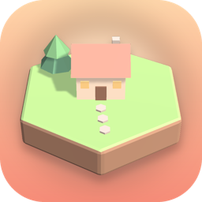

Cozy Island
A calm hex tile puzzle — build your little world.
Contact
Found a bug or have an idea? Write to bahruzshabili@gmail.com and tell us your phone model if something looks wrong.
Questions
- How do I play?
- Tap a glowing spot to place the tile you hold. Each tile scores 1 point, plus 2 for every neighbour of the same kind. Match three or more at once to win extra tiles. Reach the target before you run out. In the game, open How to on the main screen for a short guide.
- How do I unlock themes?
- Themes open as you reach new levels: Beach at level 3, Halloween at 5, New Year at 8, Egypt at 11 and Azerbaijan at 15.
- I lost my progress.
- Progress is saved on your phone only. Deleting the game, or clearing its data, removes it.
- How do I change my ad privacy choice?
- Open Settings → Privacy options in the game (shown in regions where it applies). On iPhone you can also change tracking in iOS Settings → Privacy & Security → Tracking.
- Can I turn off the music or sounds?
- Yes, in Settings or from the pause menu.
Privacy
Read the privacy policy.